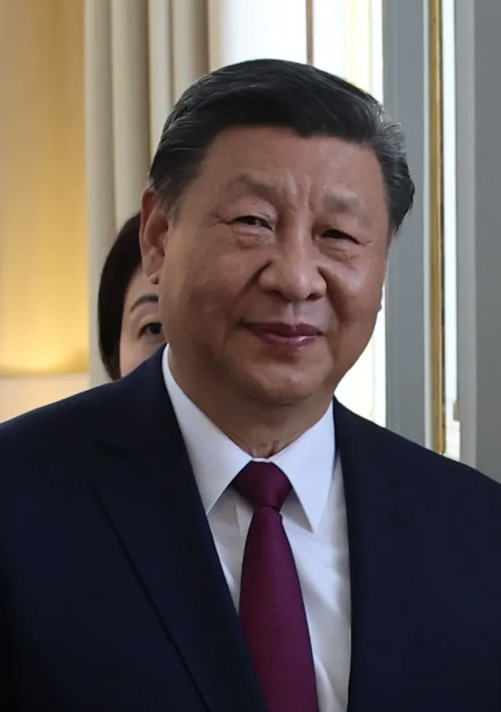

Xi Jinping afirma que la 'reunificación' de Taiwán es inevitable; la isla rechaza la reivindicación china
El presidente chino vuelve a defender la incorporación de Taiwán al control de Pekín durante un acto dedicado a Sun Yat-sen, en medio de nuevas tensiones regionales.

Qué pasó
El presidente de China, Xi Jinping, afirmó este jueves, 12 de noviembre de 2026, que la 'reunificación completa' de Taiwán con China debe concretarse y que la corriente de la historia no puede detenerse. Habló en el Gran Palacio del Pueblo, en Pekín, durante una ceremonia por el 160.º aniversario del nacimiento de Sun Yat-sen, figura clave de la revolución de 1911. Xi presentó la incorporación de la isla como misión histórica del Partido Comunista Chino y dijo que prefería una vía pacífica. Taiwán, gobernado democráticamente, rechaza la reivindicación de soberanía de Pekín y su propuesta de 'un país, dos sistemas'. Las declaraciones coinciden con nuevas advertencias de los ministros del G7 sobre la actividad marítima china al este de Taiwán. Xi no anunció ninguna operación militar ni una fecha para modificar el estatus de la isla.
Análisis del Cuervo
Las palabras de Xi reiteran una postura histórica de Pekín, pero llegan en un momento delicado: los ministros del G7 advirtieron que las patrullas chinas alrededor de Taiwán amenazan la estabilidad regional y la libertad de navegación. China considera la isla parte de su territorio y afirma preferir una solución pacífica, aunque no descarta el uso de la fuerza. El gobierno taiwanés de Lai Ching-te sostiene que solo sus habitantes pueden decidir su futuro. Conviene distinguir la retórica política de un anuncio de invasión: el discurso no incluyó una orden pública de ataque ni un calendario de anexión.
Contrapunto
Cuando un gobernante declara inevitable el destino de toda una población, cabe preguntar: ¿inevitable para quién? Pekín habla de reunificación; muchos taiwaneses temen perder su autonomía. La estabilidad en el estrecho exige diálogo sin coerción, no profecías políticas. Y una declaración contundente tampoco demuestra que una invasión sea inminente.